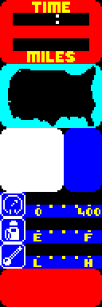

| Routines |
| Prev: 699D | Up: Map | Next: 6A09 |
|
Used by the routine at CreateWindow.
Draws the sidebar (the leftmost 08 columns of the screen) from the tile layout at SidebarLayoutData and the attributes at SidebarAttributes. Each tile is printed with PrintScreen while the character set pointer refers to the tiles at UDG_Tiles.
|
||||
| DrawHUDPanel | 69BC | LD HL,($5C36) | Stash CHARS on the stack. | |
| 69BF | PUSH HL | |||
| 69C0 | LD HL,$74B1 | Write UDG_Tiles to CHARS. | ||
| 69C3 | LD ($5C36),HL | |||
| 69C6 | LD HL,$7691 | Point HL at the tile layout of the sidebar (SidebarLayoutData). | ||
| 69C9 | LD DE,$7751 | Point DE at the attributes of the sidebar (SidebarAttributes). | ||
| 69CC | EXX | Switch to the shadow registers. | ||
| 69CD | LD HL,$4000 | Point HL' at the screen buffer (4000). | ||
| 69D0 | LD DE,$5800 | Point DE' at the attribute buffer (5800). | ||
| 69D3 | LD C,$18 | Set the row counter to 18 the height of the sidebar. | ||
| 69D5 | LD A,$08 | Write 08 (width of the sidebar) to WidthCounter. | ||
| 69D7 | LD ($5E2C),A | |||
| DrawHUDPanel_Loop | 69DA | LD A,($5E2C) | Set the tile counter to the width of the sidebar (WidthCounter). | |
| 69DD | LD B,A | |||
| 69DE | PUSH HL | Stash the buffer addresses of the start of this row on the stack. | ||
| 69DF | PUSH DE | |||
| DrawHUDPanel_LineLoop | 69E0 | EXX | Switch back to the normal registers. | |
| 69E1 | LD A,(HL) | Fetch the tile from the sidebar layout. | ||
| 69E2 | INC HL | Move on to the next tile. | ||
| 69E3 | EXX | Switch to the shadow registers. | ||
|
Now using the screen data held by the shadow registers.
|
||||
| 69E4 | CALL PrintScreen | Print the tile using PrintScreen. | ||
| 69E7 | EXX | Switch back to the normal registers. | ||
| 69E8 | LD A,(DE) | Fetch the attribute of the tile from the sidebar attributes. | ||
| 69E9 | INC DE | Move on to the next attribute. | ||
| 69EA | EXX | Switch to the shadow registers. | ||
| 69EB | LD (DE),A | Write the sidebar attribute data to the attribute buffer. | ||
| 69EC | INC DE | Increment the attribute buffer pointer by one. | ||
| 69ED | DJNZ DrawHUDPanel_LineLoop | Decrease the tile counter by one and loop back to DrawHUDPanel_LineLoop until the whole row has been drawn. | ||
|
Restore the attribute buffer address for the start of this line.
|
||||
| 69EF | POP HL | Restore HL' from the stack. | ||
| 69F0 | CALL MoveDownOneRow | Call MoveDownOneRow to move down a row. | ||
| 69F3 | EX DE,HL | Exchange DE' and HL' so that DE' holds the attribute address for the next row (HL' is overwritten below). | ||
|
Restore the screen buffer address for the start of this line.
|
||||
| 69F4 | POP HL | Restore HL' from the stack. | ||
| 69F5 | CALL MoveDownOneRow | Call MoveDownOneRow to move down a row. | ||
|
Account for the Spectrum screen layout in memory.
|
||||
| 69F8 | LD A,L | Fetch the low byte of the screen buffer address. | ||
| 69F9 | AND %11100000 | Keep only bits 5-7. | ||
| 69FB | JR NZ,DrawHUDPanel_Skip | Jump to DrawHUDPanel_Skip if we're not crossing a screen section. | ||
| 69FD | LD A,H | Else H'=H'+07. | ||
| 69FE | ADD A,$07 | |||
| 6A00 | LD H,A | |||
| DrawHUDPanel_Skip | 6A01 | DEC C | Decrease the row counter by one. | |
| 6A02 | JR NZ,DrawHUDPanel_Loop | Jump back to DrawHUDPanel_Loop until all of the rows have been drawn. | ||
|
All done! Finish by reverting the change to CHARS and returning.
|
||||
| 6A04 | POP HL | Restore CHARSET from the stack and write it back to CHARS. | ||
| 6A05 | LD ($5C36),HL | |||
| 6A08 | RET | Return. | ||
|
View the equivalent code in;
|
||||
| Prev: 699D | Up: Map | Next: 6A09 |
